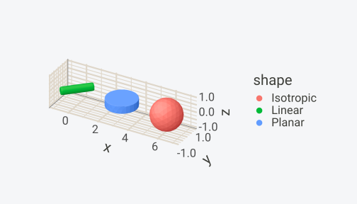

A symmetric tensor is a matrix whose eigenvectors give three
perpendicular directions and whose eigenvalues give their magnitudes.
geom_tensor_3d() draws one tensor at each position. It
accepts symmetric positive semidefinite matrices in a list-column. Building
surfaces and solids covers covariance ellipsoids and other solid
glyphs.
This example draws three tensor shapes and rotates one of them. Installation is covered in Get started.
d <- data.frame(x = c(0, 3, 6), y = 0, z = 0,
shape = c("Linear", "Planar", "Isotropic"))
d$tensor <- list(diag(c(1, 0.25, 0.25)), diag(c(1, 1, 0.25)), diag(3))
ggplot(d, aes(x, y, z = z, tensor = tensor, fill = shape)) +
geom_tensor_3d(glyph = "superquadric", gamma = 3, detail = 2) +
coord_3d(aspect = "data") + theme(legend.position = "bottom")
Kindlmann’s superquadric construction uses the relative linear and
planar anisotropy of each tensor to choose its surface shape.
gamma controls edge sharpness.
glyph = "ellipsoid" uses a sphere stretched along the
tensor eigenvectors. gamma = 0 produces the same surface
shape for a superquadric.
The three semi-axis lengths equal scale times the
eigenvalues, in scale-transformed position units. A covariance ellipsoid
uses the square roots of covariance eigenvalues;
geom_ellipsoid_3d(aes(sigma = covariance)) draws that
geometry directly. stat_ellipsoid_3d() estimates covariance
regions from groups of observations.
Rotated tensors
Multiplying a diagonal matrix on the left by a rotation and on the right by its transpose gives the tensor in the plotting coordinates.
angle <- pi / 4
rotation <- matrix(c(cos(angle), sin(angle), 0,
-sin(angle), cos(angle), 0, 0, 0, 1), 3)
d$tensor[[1]] <- rotation %*% d$tensor[[1]] %*% t(rotation)
ggplot(d, aes(x, y, z = z, tensor = tensor, fill = shape)) +
geom_tensor_3d(glyph = "superquadric", gamma = 3, detail = 2) +
coord_3d(aspect = "data") + theme(legend.position = "bottom")
Kindlmann (2004), Superquadric tensor glyphs, defines the anisotropy measures and shape equations used here.